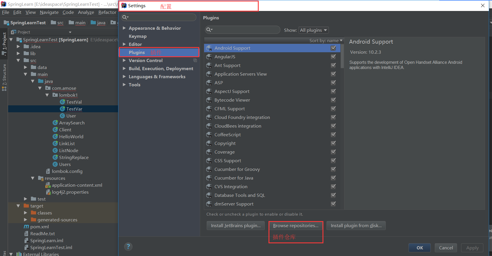
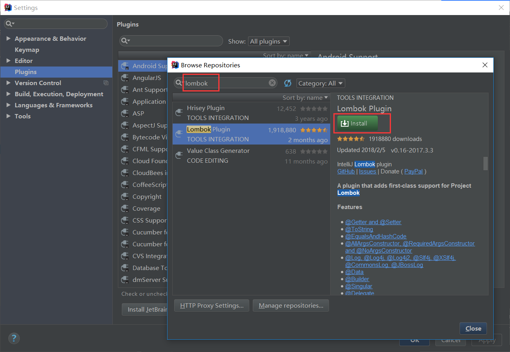
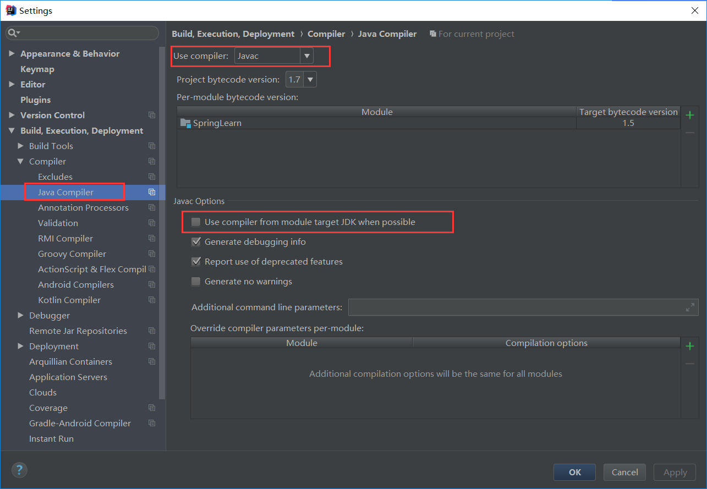

一.主题简介
lombok是一个通过注解来减少模板代码的插件,其作用于编译期,网上都是这么说的:就是源代码在编译成字节码的时候修改了语法树的节点规则进行了加强生成.在我的理解就是在编译的时候将被注解的地方生成对应注解的模板代码.就跟代码生成器一样,只不过lombok生成的是字节码,我们生成的是java源码.介绍到这,我们开始安装~
二.安装插件
找到配置下的插件管理器,点击插件仓库搜索lombok进行安装:File->Settings->Plugins


三.配置
配置编译器的属性,勾选使用注解处理,然后重启idea.File->Settings->Build->Compiler
->Annotation Processors

四.踩坑检测
在安装插件的时候踩了两个坑.
坑1:编译器使用的Eclipse,导致lombok插件无法使用.改成javac,并去掉使用模块的jdk选项
坑2:若要使用lombok.config配置参数.请不要放在resources文件夹下,放在src包下,不然编译无法时是读取不到的.
五.总结
看着挺简单的东西,在真正去实践的时候你才会发现事实永远不会像我们想象的那么简单.
谨记墨菲定律：
一、任何事都没有表面看起来那么简单；
二、所有的事都会比你预计的时间长；
三、会出错的事总会出错；
四、如果你担心某种情况发生，那么它就更有可能发生
最后更新： 2018年04月20日 12:02